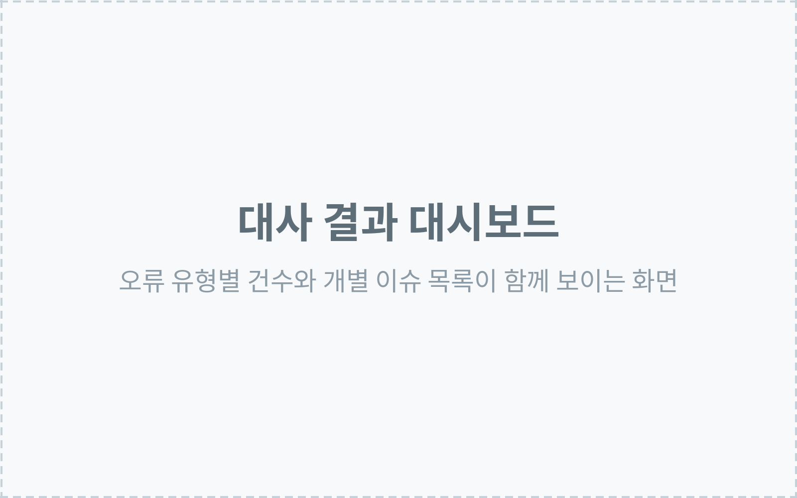
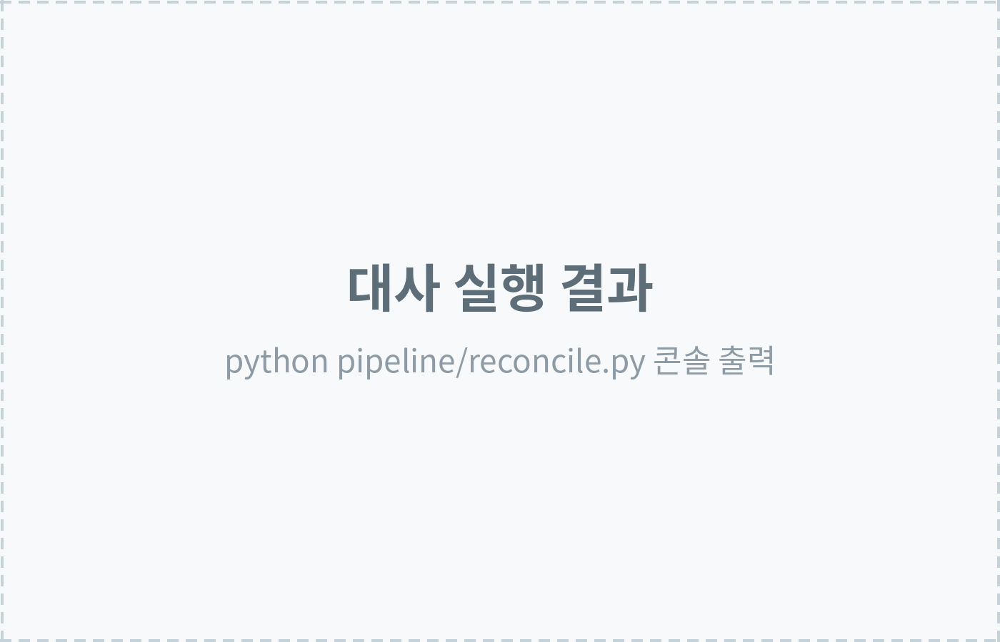

프로젝트 01 · 인턴 지원 과제
금융 데이터 통합 · 정합성 검증
통합한 금융 데이터가 원천과 일치하는지, 사람이 눈으로 대조하지 않고 검증합니다.
-
오류 15/15
의도적으로 삽입한 오류 전건 탐지
-
84건
대사 대상 레코드
-
4종
자동 검증 규칙

본인 역할
개인 과제입니다. 수집 · 정규화 · 통합 · 정합성 대사 전 과정을 Python으로 직접 구현하고, 결과를 확인하는 웹 대시보드까지 만들었습니다. Supabase SQL은 스키마 · 마이그레이션 · 행 수준 접근 정책에만 사용했습니다.
수행 내용
- 은행 · 카드 · 증권 모의 제공기관 API에서 데이터를 수집해 원천 → 표준 → 운영 세 계층으로 통합
- 기관마다 다른 필드명 · 날짜 · 금액 형식을 공통 스키마로 정규화하고,
(원천, 원천레코드ID)를 키로 중복 병합 - 오류를 누락 · 중복 · 금액 불일치 · 건수/잔액 불일치 네 규칙으로 정의하고 자동 대사 구현
- 모든 운영 레코드에 원본 링크를 부여해 역추적할 수 있게 하고, 변경 이력을 추가 전용 감사 로그에 기록
- 수집을 원천별로 독립 실행해, 한 기관이 실패해도 나머지는 정상 적재되도록 구성
-
제공기관 API
은행 · 카드 · 증권
-
원천
응답을 변환 없이 보관
-
표준
공통 스키마로 정규화
-
운영
중복 병합, 조회 대상
정합성 대사 — 원천 · 운영 · 제공기관 정답집합을 서로 대조
| 오류 유형 | 건수 | 판정 기준 | 확인된 원인 |
|---|---|---|---|
| 누락 | 12 | 제공기관 정답집합 대비 차집합 | 카드 승인내역 2페이지 타임아웃 |
| 중복 | 1 | 원천 2건이 운영 1건으로 병합됨 | 은행 거래 재전송 |
| 금액 불일치 | 1 | 동일 키인데 원천 금액 ≠ 운영 금액 | 증권 외화 평가액 환율 반올림 |
| 건수 · 잔액 불일치 | 1 | 계좌 잔액 vs 거래 합계 | 은행 마감잔액이 거래합보다 큼 |

python pipeline/reconcile.py 실행 결과 — 금액 허용오차는 0이고, 다시 실행해도 같은 결과가 나옵니다.